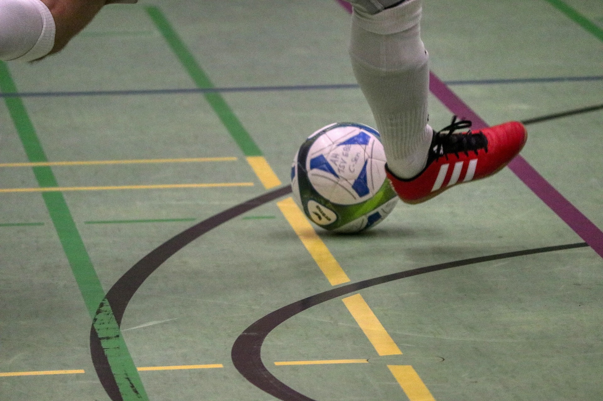

Año 2013
El Inicio
Un grupo de amigos deciden formar su propio equipo para competir en el campeonato de Futsal Categoria "D". El primer equipo de Tijuana estaba compuesto por Facu Villalba, Pedro Col, bruno Tres, Vera Sergio y el DT Miguel Ruisti dando asi los primeros pasos de un equipo con lazos de amistad y alma de gloria. Logrando en su primer campeonato de Tijuara llegar a los playoff
Año 2014

Crecimiento y Ascenso
Este año se siguen sumando amigos en busca de la gloria. Ingresan a la plantilla Luciano Brites, Orlando Escalantes, Diego Cuca, Pablo Cuca, Santio Britez, Guille Fernnandez y Nicolas Malaice.. En el Año 2014 Tijuana queda 3er en el Campeonato y asciende mediante una promoción
Año 2015

El Plantel se renueva
En el Año 2015 Tijuana tiene una importante renovación del plantel, aun así, ese año Tijuana logra llegar a los playoff
Año 2016

Seguimos sumando
Este año se siguen sumando jugadores al plantel de Tijuana, se suman los mellizos Otazu, Sergio Vera, Juan Manuel Ortiz, Adrian Junko y Bruno Sanchez. El equipo se consolida y se logra el ascenso a la categoria "B", Tijuana sale 2do en la tabla General. Perdiendo la final
Año 2017

Tijuana llega a la Categoria "C"
Este año se siguen sumando amigos en busca de la gloria. Ingresan a la plantilla Luciano Brites, Orlando Escalantes, Diego Cuca, Pablo Cuca, Santio Britez, Guille Fernnandez y Nicolas Malaice.. En el Año 2017 Tijuna queda 3er en el Campeonato y asciende mediante una promoción
Año 2018

Un equipo consolidado
Este año se siguen sumando amigos y se llega a la categoria "A". Ingresan a la plantilla Manu Romero, Agustin Silvero.. En el Año 2018 Tijuana queda 1er en el Campeonato y asciende a la categoria "A"
Año 2019

Divicion de Honor
Este año Tijuara queda 4to en el Campeonato
Año 2020

La pandemia
Este año no se jugo
Año 2021
Empezando nuevamente
Este año se siguen sumando amigos en busca de la gloria.